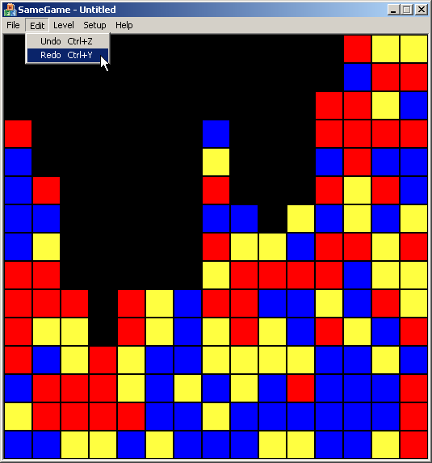
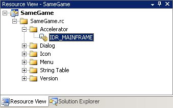
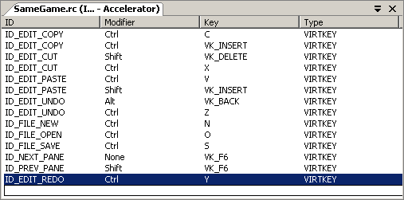

"The Same Game", Part 5 of 5: Adding an Undo/Redo Stack and Keyboard Accelerators
"The Same Game", Part 5 of 5: Adding an Undo/Redo Stack and Keyboard Accelerators
Introduction
This is it. We are almost done with our version of the SameGame. We've discussed quite a few topics ranging from event driven programming to GDI graphics programming. A lot of the topics we've discussed transcend the gap between game programming and application programming in general. Building MFC applications is one of such topics, not many games are written in MFC but tons of applications are (the list is very long). The topic of this final article is one of these topics. We'll discuss how to put together an undo/redo stack for our game. Undo/redo is an essential feature for most applications. If you've played our game for any period of time I'm sure you've said to yourself, "Oops! Where's the undo?!" Well here it is.
Undo/Redo Stack
We call this feature the "undo/redo stack" because of the abstract data type (ADT) stack. A stack is a very well known data type in Computer Science theory. We'll give it a quick explanation here but for further information concerning stacks see this article. The stack is a collection of objects that is similar to a stack of plates in your kitchen; the only way you can get to the bottom plates is to first move the top ones. To add plates you just put them on top of the stack. In other words it is a "Last In, First Out" (LIFO) type of collection. This is a handy way to store your last moves. When you make a move in the game the previous state is put on the top of the undo stack so that it can be restored in the reverse order that it was made. The way we are going to do this is to keep a copy of the old game board object on the undo stack before we delete pieces from the new one. When we undo a move, the current board is put onto the redo stack and the top board from the undo stack is now the current board. The redo operation is just the opposite, put the current board on the undo stack and take the top board off of the redo stack and make that the current board.
We are going to need to make a few changes to our game board in order to make this work. We need to create a copy constructor to do a deep copy. Just add the copy constructor function prototype right between the default constructor and the destructor in SameGameBoard.h (changes bolded).
/* Default Constructor */
CSameGameBoard(void);
/* Copy Constructor */
CSameGameBoard(const CSameGameBoard& board);
/* Destructor */
~CSameGameBoard(void);
We use a deep copy constructor because we have a pointer to some dynamically allocated memory. This means we can't just copy the pointer but dynamically allocate more memory and then copy the contents into that memory space (if we did just copy the pointer, then the first time a game board was freed, all of the pointers would be freed too—right out from under other instances of the class). We add a copy constructor in the source file for the game board (SameGameBoard.cpp) by adding the function implementation.
CSameGameBoard::CSameGameBoard(const CSameGameBoard& board)
{
// Copy all of the regular data members
m_nColumns = board.m_nColumns;
m_nRows = board.m_nRows;
m_nHeight = board.m_nHeight;
m_nWidth = board.m_nWidth;
m_nRemaining = board.m_nRemaining;
m_nColors = board.m_nColors;
// Copy ove the colors for the board
for ( int i = 0; i < 8; i++ )
m_arrColors[i] = board.m_arrColors[i];
m_arrBoard = NULL;
// Create a new game board of the same size
CreateBoard();
// Copy the contents of the game board
for(int row = 0; row < m_nRows; row++)
for(int col = 0; col < m_nColumns; col++)
m_arrBoard[row][col] = board.m_arrBoard[row][col];
}
The content of the copy constructor is very simple. First we copy all of
the integral type data members, i.e. all of the integers, and the colors, and
then set the board pointer to NULL. This is followed by a call to the
CreateBoard function. This function creates a new game board 2-D array of the
same size as the original because we set up the rows and columns before the
function call. Then we finish up with a couple of for loops that iterate all
of the board spaces and then copy the color value into the new board. That is all that is required by the game board.
Most of the work for this feature is going to be up to the document to handle. The document is going to contain both of the stacks and create the undo/redo trail. The Standard Template Library contains a stack class that is very easy to use, you just give it a type (we'll use a pointer to a SameGameBoard) and it provides you with a few simple functions. The Push function adds a new item onto the stack while the Pop function removes the most recently pushed item. The Top function returns the item on the top of the stack and the Empty function tells whether or not the stack is empty. Here is the full source code for the document (SameGameDoc.h) with all of the changes (changes bolded).
#pragma once
#include "SameGameBoard.h"
#include <stack>
class CSameGameDoc : public CDocument
{
protected: // create from serialization only
CSameGameDoc();
virtual ~CSameGameDoc();
DECLARE_DYNCREATE(CSameGameDoc)
// Operations
public:
/* Functions for accessing the game board */
COLORREF GetBoardSpace(int row, int col)
{ return m_board->GetBoardSpace(row, col); }
void SetupBoard(void) { m_board->SetupBoard(); }
int GetWidth(void) { return m_board->GetWidth(); }
void SetWidth(int nWidth) { m_board->SetWidth(nWidth); }
int GetHeight(void) { return m_board->GetHeight(); }
void SetHeight(int nHeight) { m_board->SetHeight(nHeight); }
int GetColumns(void) { return m_board->GetColumns(); }
void SetColumns(int nColumns) { m_board->SetColumns(nColumns); }
int GetRows(void) { return m_board->GetRows(); }
void SetRows(int nRows) { m_board->SetRows(nRows); }
void DeleteBoard(void) { m_board->DeleteBoard(); }
bool IsGameOver() { return m_board->IsGameOver(); }
/* Notice we removed the implementation of this function */
int DeleteBlocks(int row, int col);
int GetRemainingCount()
{ return m_board->GetRemainingCount(); }
int GetNumColors() { return m_board->GetNumColors(); }
void SetNumColors(int nColors);
/* Undo/redo functions */
void UndoLast();
bool CanUndo();
void RedoLast();
bool CanRedo();
// Overrides
public:
virtual BOOL OnNewDocument();
protected:
/* Functions to clear undo/redo stacks */
void ClearUndo();
void ClearRedo();
/* Instance of the game board--notice that we made it a pointer */
CSameGameBoard* m_board;
/* Undo stack */
std::stack<CSameGameBoard*> m_undo;
/* Redo stack */
std::stack<CSameGameBoard*> m_redo;
// Generated message map functions
protected:
DECLARE_MESSAGE_MAP()
};
First of all we need to include the stack header so that we can use the stack class. Since we are going to change the m_board variable to a pointer we'll have to change from using the dot operator to the arrow or pointer operator through every function in the document. Next on the list of changes is the fact that we are moving the implementation of the DeleteBlocks function to the source file. This function has become more involved than just a single line so we are going to move it.
We then add six new functions, four are public functions and two are protected. The public functions are divided into two groups, one set of functions, UndoLast and RedoLast, actually do the undo and redo, while the second set, CanUndo and CanRedo, are simple tests we'll use for enabling and disabling the menu options when they are not available. The protected functions are simple helper functions to clear out and deallocate the associated memory from both of the stacks. Finally we add the two declarations of the undo/redo stacks.
With the change to a pointer to the game board, there are a few things that need to be added to existing functions before we add the new functions. Below is the source code for the new document in SameGameDoc.cpp (changes bolded).
#include "stdafx.h"
#include "SameGame.h"
#include "SameGameDoc.h"
#ifdef _DEBUG
#define new DEBUG_NEW
#endif
// CSameGameDoc
IMPLEMENT_DYNCREATE(CSameGameDoc, CDocument)
BEGIN_MESSAGE_MAP(CSameGameDoc, CDocument)
END_MESSAGE_MAP()
// CSameGameDoc construction/destruction
CSameGameDoc::CSameGameDoc()
{
// There should always be a game board
m_board = new CSameGameBoard();
}
CSameGameDoc::~CSameGameDoc()
{
// Delete the current game board
delete m_board;
// Delete everything from the undo stack
ClearUndo();
// Delete everything from the redo stack
ClearRedo();
}
BOOL CSameGameDoc::OnNewDocument()
{
if (!CDocument::OnNewDocument())
return FALSE;
// Set (or reset) the game board
m_board->SetupBoard();
// Clear the undo/redo stacks
ClearUndo();
ClearRedo();
return TRUE;
}
void CSameGameDoc::SetNumColors(int nColors)
{
// Set the number of colors first
m_board->SetNumColors(nColors);
// Then reset the game board
m_board->SetupBoard();
}
int CSameGameDoc::DeleteBlocks(int row, int col)
{
// Save the current board in the undo stack
m_undo.push(new CSameGameBoard(*m_board));
// Empty out the redo stack
ClearRedo();
// Then delete the blocks
int blocks = m_board->DeleteBlocks(row, col);
// Clear the undo stack at the end of a game
if(m_board->IsGameOver())
ClearUndo();
// Return the number of blocks
return blocks;
}
void CSameGameDoc::UndoLast()
{
// First make sure that there is a move to undo
if(m_undo.empty())
return;
// Take the current board and put it on the redo
m_redo.push(m_board);
// Take the top undo and make it the current
m_board = m_undo.top();
m_undo.pop();
}
bool CSameGameDoc::CanUndo()
{
// Can undo if the undo stack isn't empty
return !m_undo.empty();
}
void CSameGameDoc::RedoLast()
{
// First make sure that there is a move to redo
if(m_redo.empty())
return;
// Take the current board and put it on the undo
m_undo.push(m_board);
// Take the top redo and make it the current
m_board = m_redo.top();
m_redo.pop();
}
bool CSameGameDoc::CanRedo()
{
// Can redo if the redo stack isn't empty
return !m_redo.empty();
}
void CSameGameDoc::ClearUndo()
{
// Delete everything from the undo stack
while(!m_undo.empty())
{
delete m_undo.top();
m_undo.pop();
}
}
void CSameGameDoc::ClearRedo()
{
// Delete everything from the redo stack
while(!m_redo.empty())
{
delete m_redo.top();
m_redo.pop();
}
}
In the constructor we need to create a new game board. We make the
assumption that there will always be a valid game board pointed to by the
m_board pointer so this must be created in the constructor and then deleted in
the destructor. Once it is deleted in the destructor we also have to delete
all of the other game boards that have been kept around by calling the Clear functions to clear the undo and redo stacks.
Next we update the OnNewDocument function to clear the undo and redo stacks
so that a new game starts out with a fresh set of stacks. The last update to
this file before we get to new functions is the movement of the DeleteBlocks
function from the header to the source file. The function used to be very
simple, just a call to the DeleteBlocks function on the game board, but now it needs to do more. Before we delete any blocks and change the layout of the game board we need to save a copy of the current game board on the undo stack. The way we do this is by using the copy constructor that we just recently implemented. Once we make a move we need to clear the redo stack because anything that was on it is no longer valid. Once these two stacks have been updated we are then ready to proceed with the actual deleting of the blocks. Once the game is over we want to clear the undo stack because the game is over and the state is final. Clearing the stack gives the game a true finality and doesn't allow the player to go back and play the board differently once the game is over. Finally we return the number of blocks that were deleted.
The UndoLast and RedoLast are very similar to each other, they just reverse the process. First we have to make sure that there is a move to undo or redo, we could just use CanUndo or CanRedo here but I prefer to just access the empty() function on the private stack, mostly out of preference but it is a little bit more efficient also. So if there is a move to undo/redo then we take the current game board and push it onto the opposite stack, the redo stack if we are undoing and the undo stack if we are redoing. Then we set the current pointer to the top game board on the undo or redo stack and pop it off. That process accomplishes an undo or redo. The CanUndo and CanRedo functions are simple functions that give us the answer to the question, "can I undo/redo something? Or is there something on the stack?" We check this by checking if the stack is not empty.
The last two functions that we've added to the document class are used to clear and recover the memory used by the different stacks. We just loop through all of the pointers in the stack, deleting the object and then popping the pointer off of the stack. This ensures that all of the memory is deallocated for us.
At this point we are ready to make the final changes to the view. These changes are just event handlers for the menu options of undo and redo. We first create the event handlers through the events (lightning bolt) button on the Properties View from the CSameGameView.h file. We want to add both ON_COMMAND and ON_UPDATE_COMMAND_UI handlers. The ON_UPDATE_COMMAND_UI handlers will allow us to disable the menu options when there aren't moves to undo/redo. Once you add all four of the event handlers the following code will be added to the header file, I added the comments.
/* Functions for undo/redo */
afx_msg void OnEditUndo();
afx_msg void OnEditRedo();
/* Functions to update the undo/redo menu options */
afx_msg void OnUpdateEditUndo(CCmdUI *pCmdUI);
afx_msg void OnUpdateEditRedo(CCmdUI *pCmdUI);
These function prototypes are just like the menu event handlers we've seen for the past two articles so I won't go into further detail. Now let's take a look at the source file. In the message map you'll find four new lines that set up the event handlers, associating events, IDs and functions. Again we've seen this before.
ON_COMMAND(ID_EDIT_UNDO, &CSameGameView::OnEditUndo)
ON_COMMAND(ID_EDIT_REDO, &CSameGameView::OnEditRedo)
ON_UPDATE_COMMAND_UI(ID_EDIT_UNDO, &CSameGameView::OnUpdateEditUndo)
ON_UPDATE_COMMAND_UI(ID_EDIT_REDO, &CSameGameView::OnUpdateEditRedo)
The implementation of the two ON_COMMAND event handlers are fairly simple and follow a pattern that we've seen before, get a pointer to the document, call the function on the document and finally cause the view to redraw. Do this for both undo and redo.
void CSameGameView::OnEditUndo()
{
// First get a pointer to the document
CSameGameDoc* pDoc = GetDocument();
ASSERT_VALID(pDoc);
if(!pDoc)
return;
// Call undo on the document
pDoc->UndoLast();
// Force the view to redraw
Invalidate();
UpdateWindow();
}
void CSameGameView::OnEditRedo()
{
// First get a pointer to the document
CSameGameDoc* pDoc = GetDocument();
ASSERT_VALID(pDoc);
if(!pDoc)
return;
// Call redo on the document
pDoc->RedoLast();
// Force the view to redraw
Invalidate();
UpdateWindow();
}
The event handlers for the ON_UPDATE_COMMAND_UI events, again, first get a pointer to the document for access to the game board. The new thing (bolded) about these functions is the use of the Enable function. This function indicates whether to enable or disable the menu option based on the result of the CanUndo or CanRedo functions.
void CSameGameView::OnUpdateEditUndo(CCmdUI *pCmdUI)
{
// First get a pointer to the document
CSameGameDoc* pDoc = GetDocument();
ASSERT_VALID(pDoc);
if(!pDoc)
return;
// Enable option if it is available
pCmdUI->Enable(pDoc->CanUndo());
}
void CSameGameView::OnUpdateEditRedo(CCmdUI *pCmdUI)
{
// First get a pointer to the document
CSameGameDoc* pDoc = GetDocument();
ASSERT_VALID(pDoc);
if(!pDoc)
return;
// Enable option if it is available
pCmdUI->Enable(pDoc->CanRedo());
}
That is it, our undo/redo stacks are now completely functioning. Go ahead and try it out. Make a valid move and check the undo menu option. It should now be enabled. Click on it and you'll see the original game board. Check the redo menu option and it will be enabled now. Click that and you'll be back to where you were before the undo. Here is what your game should look like now.

Accelerators
Try pressing Ctrl+Z after you've made a few moves and you'll see that undo works with the keyboard. Now try to press Ctrl+Y for redo. Did it work? No? Well we can fix that. Remember that on the menu option for redo we indicated to the user that Ctrl+Y would send the ON_COMMAND to ID_EDIT_REDO. I mentioned that is was called an accelerator.

To access the accelerators, open up the Resource View from the View menu (under Other Windows) or press the accelerator Ctrl+Shift+E in Visual Studio. Then open up the Accelerator option under SameGame.rc and double click on IDR_MAINFRAME to bring up the Accelerator Editor. In the image below I've added an accelerator for the redo command.

To add your own, click on the blank line following the last accelerator, in
the ID column; this will bring up a drop-down menu that lets you select ID_EDIT_REDO, the ID of the menu option for the redo command; give it a key of Y and a modifier of Ctrl (Ctrl+Y). Now compile your game and run it. Just like that we've added a keystroke combination that now sends the ON_COMMAND to ID_EDIT_REDO. Pretty simple to do, isn't it?
Final Thoughts
That was quite the journey! We went from nothing to a fully functioning, interesting, challenging game. We've covered lots of topics that pertain to both game development and Windows application development in general. Making games is a ton of fun and I hope that you've had fun making this one. I hope that you've seen how easy it is to make a game and will be inspired to begin working on your own. There are many more options that we could have added to this game including keeping score and keeping track of the high scores, or saving the options to the registry so that next time you play it will remember that you are playing level 7 with 10x10 blocks on a 40x40 game board, or providing a "hint" feature that suggests a possible next move. Try adding some of those options. I've given you a great place to start now it is up to you to continue. I hope you've enjoyed learning from these articles as much as I've enjoyed writing them.
Source Code from Part 5